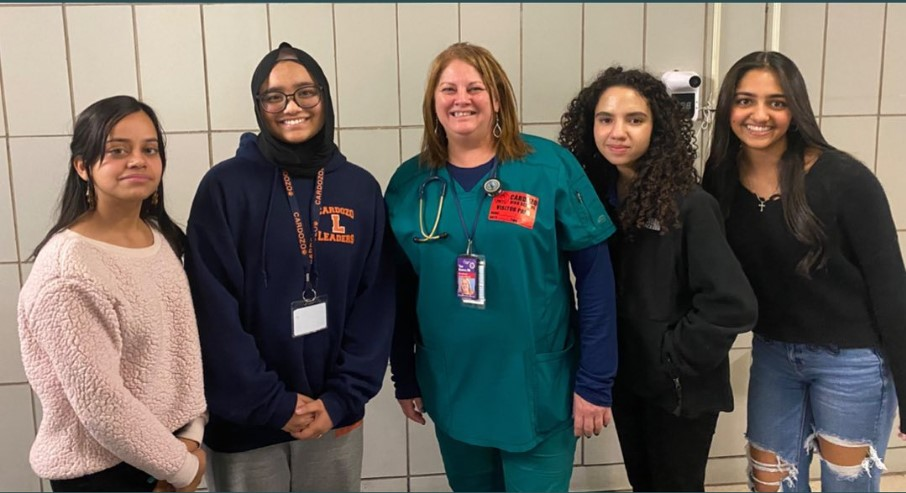
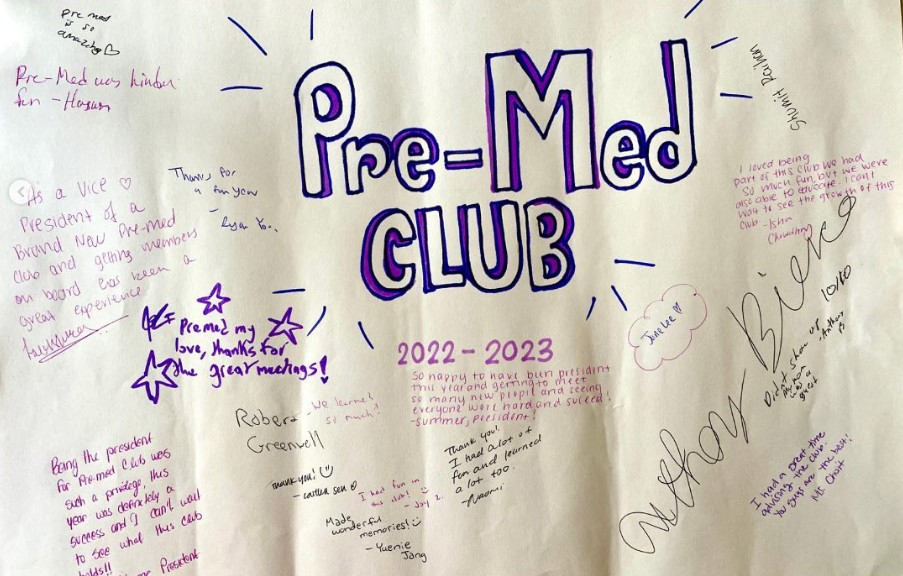

We held a fundraiser with the collaboration of
Blaze Pizza and it was a success with many members enjoying their customized pizza while using their money for the good of others.
All procceeds went to St.Jude's Children Hopsital.
Cardozo Alums, Noor Sooliman and Fati Coppin, visited the Pre-Med Club to talk to our members about their high
school experience and give advice to them about their medical experience.

Our special guest speaker, Nurse Bianco, came to talk to the members about their dedication and experiences of being an ER nurse. She inspired many of our members
as she spoke about the joys [and struggles] of her profession.
Amani Choudhury, a Cardozo Alumn of 2014, visited the club to discuss her work as a physician assistant, PA.
She gave insight into her life and helped guide our members in pursuing activities to become a PA.

During our last club meeting of the 22-23 school year, we held a party and they signed this poster as a memory.